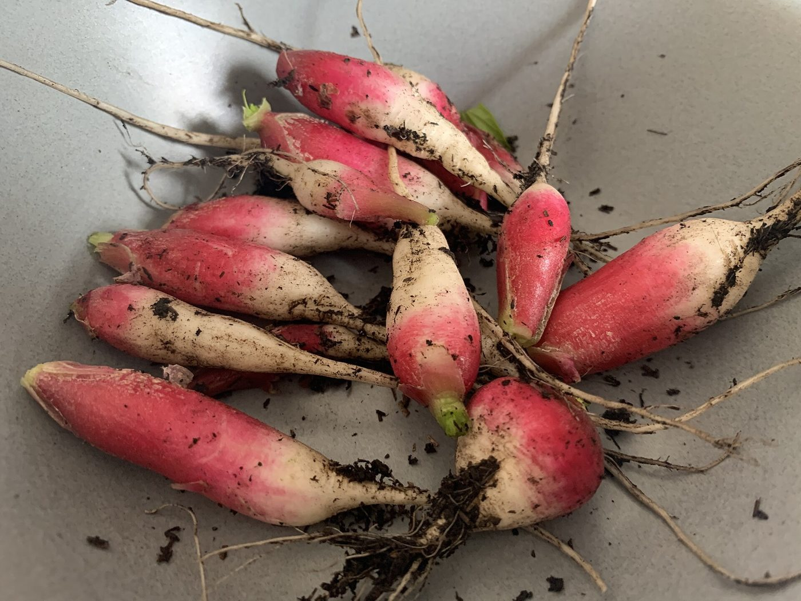

店のこと
ポテトマッシャーの部位の配置図
お店の詳しい情報は準備中です。ここでは、制作側が考えたデザインの考え方を紹介します。


制作側の連想
番号は、部位の番号
ホームの図にある1〜6の番号は、それぞれポテトマッシャーの部位の名前に対応します。ポテトマッシャーの部位を図にしたもので、制作側の連想です。お店の理念・由来とは無関係で、実際の製品の仕様を示すものでもありません。
1グリップ
手でにぎる部分で、丸みのある形をしている。木やプラスチックなど、素材はさまざま。
2ネック(軸)
グリップとヘッドをつなぐ細い棒状の部分で、力を伝える通り道になる。
3ステー
ネックから先のヘッドへ向けて斜めに広がる支えで、押す力を板の全体に分ける。
4ヘッド
食材に押し当てる広い板の部分で、平らな面をもつ。
5穴
ヘッドにあいた丸い穴で、つぶされた食材が通り抜けるところ。
6縁(リム)
ヘッドのまわりをぐるりと囲むふちで、板の形を保つ役目をもつ。
写真(イメージ)
写真(イメージ)



写真はイメージです。お店のものではありません。